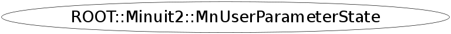

Function Members (Methods)
public:
| ~MnUserParameterState() | |
| void | Add(const string&, double) |
| void | Add(const string& name, double val, double err) |
| void | Add(const string& name, double val, double err, double, double) |
| const ROOT::Minuit2::MnUserCovariance& | Covariance() const |
| int | CovarianceStatus() const |
| double | Edm() const |
| double | Error(unsigned int) const |
| double | Error(const string&) const |
| vector<double> | Errors() const |
| double | Ext2int(unsigned int, double) const |
| unsigned int | ExtOfInt(unsigned int) const |
| void | Fix(unsigned int) |
| void | Fix(const string&) |
| double | Fval() const |
| const string& | GetName(unsigned int) const |
| const ROOT::Minuit2::MnGlobalCorrelationCoeff& | GlobalCC() const |
| bool | HasCovariance() const |
| bool | HasGlobalCC() const |
| ROOT::Minuit2::MnUserCovariance | Hessian() const |
| unsigned int | Index(const string&) const |
| double | Int2ext(unsigned int, double) const |
| const ROOT::Minuit2::MnUserCovariance& | IntCovariance() const |
| unsigned int | IntOfExt(unsigned int) const |
| const vector<double>& | IntParameters() const |
| bool | IsValid() const |
| const vector<ROOT::Minuit2::MinuitParameter>& | MinuitParameters() const |
| ROOT::Minuit2::MnUserParameterState | MnUserParameterState() |
| ROOT::Minuit2::MnUserParameterState | MnUserParameterState(const ROOT::Minuit2::MnUserParameters&) |
| ROOT::Minuit2::MnUserParameterState | MnUserParameterState(const ROOT::Minuit2::MnUserParameterState& state) |
| ROOT::Minuit2::MnUserParameterState | MnUserParameterState(const vector<double>&, const vector<double>&) |
| ROOT::Minuit2::MnUserParameterState | MnUserParameterState(const vector<double>&, const ROOT::Minuit2::MnUserCovariance&) |
| ROOT::Minuit2::MnUserParameterState | MnUserParameterState(const ROOT::Minuit2::MnUserParameters&, const ROOT::Minuit2::MnUserCovariance&) |
| ROOT::Minuit2::MnUserParameterState | MnUserParameterState(const vector<double>&, const vector<double>&, unsigned int) |
| ROOT::Minuit2::MnUserParameterState | MnUserParameterState(const ROOT::Minuit2::MinimumState&, double, const ROOT::Minuit2::MnUserTransformation&) |
| const char* | Name(unsigned int) const |
| unsigned int | NFcn() const |
| ROOT::Minuit2::MnUserParameterState& | operator=(const ROOT::Minuit2::MnUserParameterState& state) |
| const ROOT::Minuit2::MinuitParameter& | Parameter(unsigned int i) const |
| const ROOT::Minuit2::MnUserParameters& | Parameters() const |
| vector<double> | Params() const |
| const ROOT::Minuit2::MnMachinePrecision& | Precision() const |
| void | Release(unsigned int) |
| void | Release(const string&) |
| void | RemoveLimits(unsigned int) |
| void | RemoveLimits(const string&) |
| void | SetError(unsigned int, double) |
| void | SetError(const string&, double) |
| void | SetLimits(unsigned int, double, double) |
| void | SetLimits(const string&, double, double) |
| void | SetLowerLimit(unsigned int, double) |
| void | SetLowerLimit(const string&, double) |
| void | SetPrecision(double eps) |
| void | SetUpperLimit(unsigned int, double) |
| void | SetUpperLimit(const string&, double) |
| void | SetValue(unsigned int, double) |
| void | SetValue(const string&, double) |
| const ROOT::Minuit2::MnUserTransformation& | Trafo() const |
| double | Value(unsigned int) const |
| double | Value(const string&) const |
| unsigned int | VariableParameters() const |
Data Members
private:
| int | fCovStatus | covariance matrix status |
| ROOT::Minuit2::MnUserCovariance | fCovariance | |
| bool | fCovarianceValid | |
| double | fEDM | |
| double | fFVal | |
| bool | fGCCValid | |
| ROOT::Minuit2::MnGlobalCorrelationCoeff | fGlobalCC | |
| ROOT::Minuit2::MnUserCovariance | fIntCovariance | |
| vector<double> | fIntParameters | |
| unsigned int | fNFcn | |
| ROOT::Minuit2::MnUserParameters | fParameters | |
| bool | fValid |
Class Charts
{kind=link}
{kind=link}
{kind=link}
{kind=link}

Function documentation
MnUserParameterState(const std::vector<double>&, const std::vector<double>&)
construct from user parameters (before minimization)
MnUserParameterState(const MnUserParameters&)
MnUserParameterState(const ROOT::Minuit2::MinimumState& , double , const ROOT::Minuit2::MnUserTransformation& )
construct from user parameters + covariance (before minimization)
MnUserParameterState(const std::vector<double>&, const MnUserCovariance&)
MnUserParameterState(const MnUserParameters&, const MnUserCovariance&)
MnUserParameterState(const ROOT::Minuit2::MinimumState& , double , const ROOT::Minuit2::MnUserTransformation& )
construct from internal parameters (after minimization)
MnUserParameterState& operator=(const ROOT::Minuit2::MnUserParameterState& state)
const std::vector<double>& IntParameters() const
Minuit internal representation
{return fIntParameters;}int CovarianceStatus() const
covariance matrix status (0 = not valid, 1 approximate, 2, full but made pos def, 3 accurate and not pos def
{ return fCovStatus; }const MnUserTransformation& Trafo() const
transformation internal <-> external
{return fParameters.Trafo();}const std::vector<ROOT::Minuit2::MinuitParameter>& MinuitParameters() const
facade: forward interface of MnUserParameters and MnUserTransformation access to parameters (row-wise)
std::vector<double> Errors() const
void Release(unsigned int )
void SetValue(unsigned int , double )
void SetError(unsigned int , double )
void SetLimits(unsigned int , double , double )
void SetUpperLimit(unsigned int , double )
void SetLowerLimit(unsigned int , double )
void RemoveLimits(unsigned int )
double Value(unsigned int ) const
double Error(unsigned int ) const
void Release(const string& )
void SetValue(const string& , double )
void SetError(const string& , double )
void SetLimits(const string& , double , double )
void SetUpperLimit(const string& , double )
void SetLowerLimit(const string& , double )
void RemoveLimits(const string& )
double Value(const string& ) const
double Error(const string& ) const
const char* Name(unsigned int ) const
mantain interface with const char * for backward compatibility
double Ext2int(unsigned int , double ) const
unsigned int IntOfExt(unsigned int ) const
unsigned int ExtOfInt(unsigned int ) const
unsigned int VariableParameters() const
void SetPrecision(double eps)